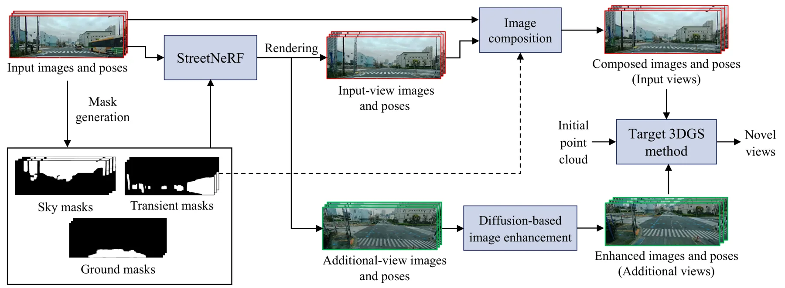
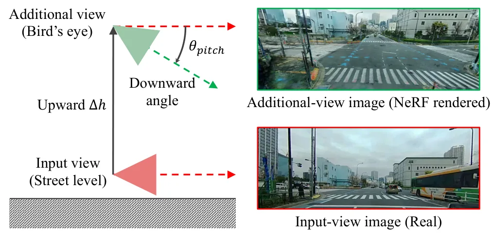
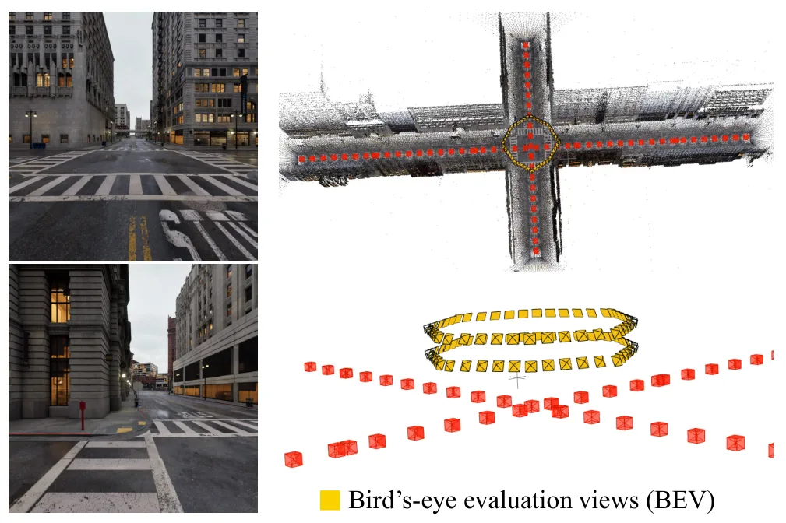
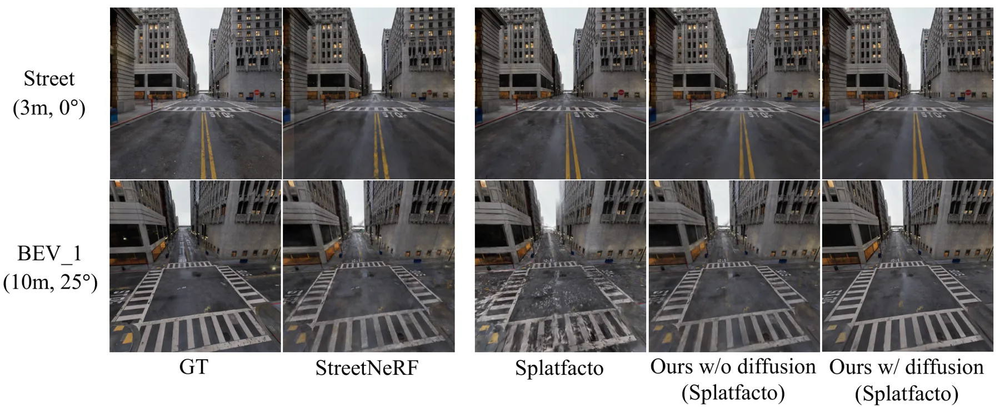
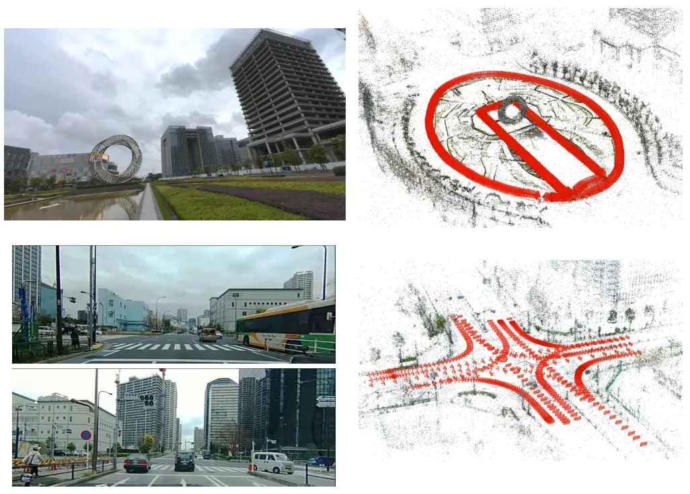
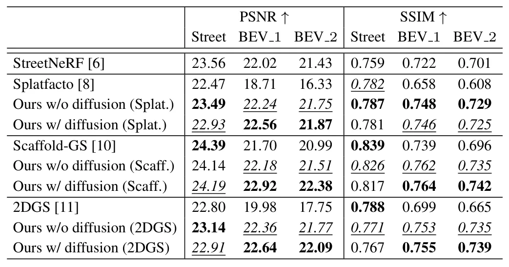
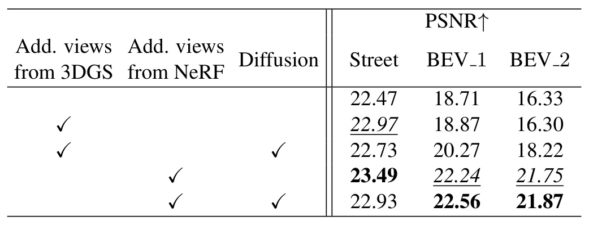
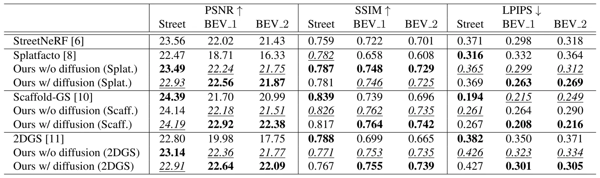

利用 NeRF 渲染图像训练 3D Gaussian SplattingLeveraging NeRF-Rendered Images for 3D Gaussian Splatting
面向街景三维重建和自动驾驶地图，有明确工程价值；创新点更多是训练数据生成/teacher-student 组合，需关注 NeRF 预训练成本。
一句话工作总结
该方法把高质量但较慢的街景 NeRF 当作 teacher，为快速 3DGS 提供去瞬态物体和鸟瞰补视角训练图像。
摘要
NeRF 与 3DGS 在新视角合成中具有互补特性：3DGS 渲染速度快，NeRF 通常渲染质量更高。本文面向街景场景，提出使用预训练的街景专用 NeRF 为目标 3DGS 生成训练图像。NeRF 渲染图像在 3DGS 训练中承担两类作用：替换含瞬态物体的街景输入视图，以继承 NeRF 对动态/瞬态干扰的清理能力；生成 bird's-eye views 作为附加视角，为 3DGS 提供更完整的几何与外观监督。作者还引入 diffusion-based image enhancement 提升附加视图质量。实验覆盖一个合成数据集和两个真实数据集，结果表明该策略可改善街景渲染，同时保持 3DGS 的速度优势和 NeRF 的质量优势。
Neural radiance field (NeRF) and 3D Gaussian splatting (3DGS) are two mainstream approaches for novel view synthesis. They often show complementary performance, i.e., 3DGS demonstrating faster rendering speed and NeRF demonstrating higher rendering quality. Motivated by this, we propose leveraging NeRF-rendered images for 3DGS. Specifically, we target street scenes and utilize a pre-trained street-specific NeRF method to produce training images for a target 3DGS method. In our 3DGS training, NeRF-rendered images are used to remove transient objects in street-level input views and to generate bird's-eye views as additional views, inheriting the higher-quality rendering of NeRF into 3DGS. We further incorporate a diffusion-based image enhancement to improve the image quality of the additional views. Experimental results on one synthetic and two real datasets demonstrate that our proposed method improves street-scene rendering while preserving the speed of 3DGS and the quality of NeRF.
中文解读摘录
- 作者：Yongfei Guo, Qizhou Huo, Xuan Sun, Yuanhao Gong；类别：cs.CV / cs.GR / cs.MM / eess.IV / math.OC；发布日期：2026-06-06；采集 score=17
- 核心问题：标准 3DGS photometric loss 对平坦区和结构丰富区一视同仁，容易牺牲边缘、轮廓和细节；EGGS 虽引入 edge-guided weighting，但主要依赖一阶梯度和线性权重。
- 方法亮点：LEGS 用二阶 Laplacian 结构响应替代一阶梯度响应，并通过非线性 response-to-weight 函数生成 pixel-wise loss 权重；渲染管线不变，属于可插拔的 loss-level 扩展。
- 结果信号：在完整 Tanks&Temples 与 Mip-NeRF360 上，论文称相对 3DGS 最高提升 1.68 dB PSNR，相对 EGGS 最高提升 0.52 dB；迁移到 FastGS/FasterGS 后最高仍可提升 1.69 dB。
- 关注价值：如果代码可复现，它是低侵入式提升 3DGS 地图边缘清晰度和细节保真的方法，适合与 SLAM/重建后的 Gaussian 地图优化阶段结合。
图表/页面预览

{kind=link}

{kind=link}

{kind=link}

{kind=link}

{kind=link}

{kind=link}

{kind=link}

{kind=link}
